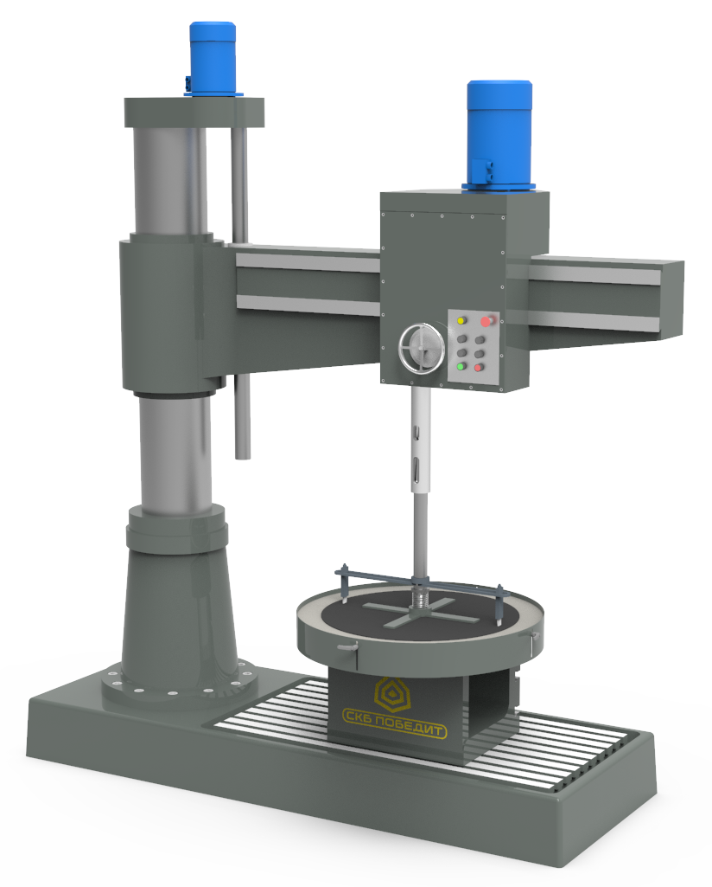

ПОБЕДИТ-СВП-2
Вырезка уплотнительных прокладок из паронита, резины и других полимерных материалов.
Вырезка уплотнительных прокладок из паронита, резины и других полимерных материалов.
| Параметры | ПОБЕДИТ-СВП-2-1 | ПОБЕДИТ-СВП-2-2 |
|---|---|---|
| Диаметр вырезаемых прокладок, мм | 60-500 | 500-1200 |
| Толщина вырезаемых прокладок, мм | до 4 | |
| Конус шпинделя | Конус Морзе №4 | Конус Морзе №4, №5 |
| Габариты, мм | 1080х870х2700 | 2580х1125х2910 |
| Масса, кг | 1520 | 3810 |
Планшайба – обеспечивает вырезку до ø1200 мм;
Головки ножевые ø60-500 мм, ø500-1200 мм в зависимости от типа станка;
Комплект прижимов в зависимости от типа станка.
Простота использования;
Конструкция ножей исключает необходимость предварительного прорезания в месте реза;
Не требует дополнительной обработки кромок вырезанных прокладок от заусенцев;
Одновременная резка внутреннего и внешнего диаметров.